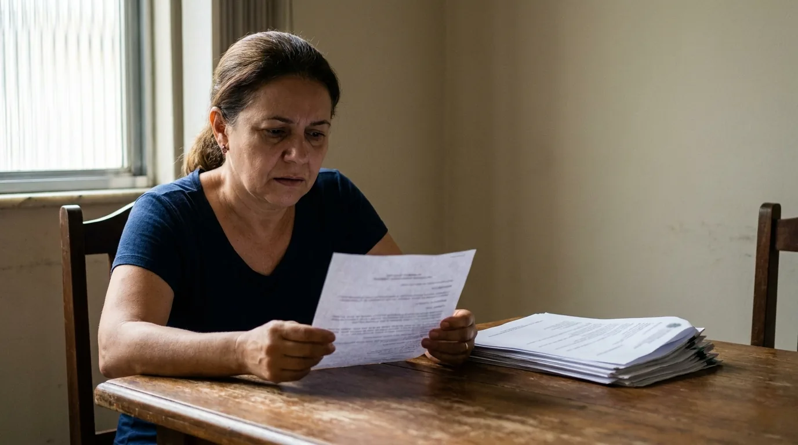

Readaptação de Servidor Público: Como Pedir e Recorrer
A professora com lesão nas cordas vocais volta da licença e é escalada para as mesmas seis aulas diárias. O agente com problema na coluna retorna e recebe de novo o plantão que exige carregar peso. O servidor com transtorno de ansiedade grave reassume o atendimento ao público que desencadeou a crise.
Em todos esses casos existe uma alternativa entre continuar adoecendo e se aposentar por incapacidade. Ela se chama readaptação, está prevista em lei há décadas e é sistematicamente subutilizada, em parte porque os próprios servidores não sabem que existe e em parte porque muitos órgãos preferem não aplicá-la.
Este guia explica o que é a readaptação de servidor público, quem tem direito, como se diferencia da licença médica e da aposentadoria, qual é o passo a passo do pedido e o que fazer quando a Administração nega.
O que é a readaptação de servidor público
Readaptação é a mudança das suas atribuições. Você continua servidor, mantém o vínculo e a remuneração, mas passa a exercer tarefas compatíveis com a limitação de capacidade física ou mental que desenvolveu, reconhecida em inspeção médica oficial do próprio órgão. A definição está no artigo 24 da Lei 8.112/1990, que rege o serviço público federal, e é reproduzida em termos semelhantes em estatutos estaduais e municipais.
A lógica é simples e humana: quando o servidor perde parte da capacidade para as atribuições originais, mas continua apto ao serviço público em geral, não faz sentido aposentá-lo nem forçá-lo a continuar na função que agrava o quadro. Adapta-se a função à pessoa.
O artigo 24 traz dois parágrafos que definem o desenho prático do instituto.
Se o servidor for julgado incapaz para o serviço público como um todo, a readaptação não cabe, e o caminho é a aposentadoria por incapacidade permanente. Esse é o argumento mais forte para quem tem o pedido negado: a própria Constituição, no artigo 40, parágrafo 1º, inciso I, com a redação da Emenda 103/2019, só admite a aposentadoria por incapacidade permanente para o servidor insuscetível de readaptação. Ou seja, adaptar vem antes de aposentar, por exigência constitucional.
A readaptação se efetiva em cargo de atribuições afins, respeitadas a habilitação exigida, a escolaridade e a equivalência de vencimentos. E, se não houver cargo vago, o servidor exerce as novas atribuições como excedente, figura detalhada mais adiante.
Esse último ponto é decisivo na prática, porque derruba a alegação mais usada pelos órgãos: "não temos cargo vago para readaptá-lo". A própria lei prevê a solução para essa hipótese.
O que a readaptação não é
Três equívocos aparecem sempre.
Não é rebaixamento. A readaptação não pode reduzir a remuneração global, porque o artigo 24 exige equivalência de vencimentos. Parcelas ligadas a condições que deixaram de existir podem ser suprimidas, e essa distinção é tratada adiante. Já a alocação em posição hierárquica humilhante não é vedada por esse artigo, mas pode ser atacada como desvio de finalidade.
Não é favor da chefia. É direito subjetivo do servidor que preenche os requisitos, e não liberalidade concedida por simpatia.
Não é punição. Readaptação usada para afastar servidor incômodo de determinada área, sem laudo que a justifique, é desvio de finalidade e pode ser anulada.
Quem tem direito à readaptação
Três requisitos se somam para a readaptação de servidor público:
Limitação da capacidade física ou mental. Precisa ser real e verificável, decorrente de doença, acidente ou condição de saúde.
Manutenção da aptidão para o serviço público. O servidor não pode estar totalmente incapaz, porque nesse caso o instituto aplicável é outro.
Verificação em inspeção médica oficial. Não basta o laudo do médico particular. É preciso que a perícia oficial do órgão reconheça a limitação, ainda que o laudo particular seja a base do pedido.
A origem da limitação não importa para o direito em si. Doença comum, doença ocupacional, acidente de trabalho ou acidente pessoal levam ao mesmo instituto.
A origem importa muito, porém, para outros efeitos, e por isso vale documentá-la desde o início. Quando a limitação decorre de acidente em serviço, de doença profissional ou de doença do trabalho, três portas se abrem além da readaptação:
- Proventos integrais se um dia a aposentadoria por incapacidade for necessária. Sem origem ocupacional, o cálculo cai para sessenta por cento da média, com acréscimo por tempo, o que pode significar quase metade da renda.
- Tratamento próprio dos afastamentos decorrentes dessa causa, que não são computados como uma licença comum qualquer.
- Responsabilização do órgão quando o adoecimento veio de condição de trabalho inadequada que ele conhecia e não corrigiu, com pedido de indenização.
Para qualquer dessas três, é preciso ter registrado formalmente, na época, o vínculo entre a função exercida e o adoecimento: comunicação de acidente em serviço ou documento equivalente, e laudo que mencione a atividade. Reconstruir essa prova anos depois é muito difícil.
Vale registrar que o Estatuto da Pessoa com Deficiência reforçou o dever de adaptar o posto de trabalho ao consagrar a chamada adaptação razoável, que é a obrigação de ajustar equipamentos, horários e tarefas para que a pessoa consiga trabalhar. A leitura conjunta da Lei 13.146/2015 com o artigo 24 da Lei 8.112/1990 fortalece bastante o pedido de readaptação de servidor público quando a limitação configura deficiência.
Readaptação durante o estágio probatório
Servidor em estágio probatório também pode pedir a readaptação de servidor público. A ausência de estabilidade não retira o direito, embora a situação exija atenção redobrada.
O risco concreto é o de a limitação de saúde contaminar a avaliação de desempenho. Faltas por licença médica, produtividade reduzida e restrições de tarefas podem aparecer nas avaliações do período como se fossem falhas do servidor. Quando isso ocorre, o pedido de readaptação formalizado e protocolado passa a ter dupla função: garante a adaptação e documenta que a limitação era conhecida e que a Administração não adotou as adaptações devidas.
Servidores que já adquiriram a estabilidade contam com proteção adicional contra a perda do cargo, mas isso não os dispensa de formalizar o pedido pelo canal correto.
Readaptação, licença, aposentadoria e reversão
Confundir esses quatro caminhos leva o servidor a pedir a coisa errada e receber uma negativa correta. A tabela separa cada um.
| Instituto | Quando cabe | Efeito no vínculo | Remuneração |
|---|---|---|---|
| Licença para tratamento de saúde | Incapacidade temporária | Afastamento, vínculo mantido | Remuneração mantida, nos limites do estatuto |
| Readaptação | Limitação permanente, com aptidão para o serviço público | Continua trabalhando, em atribuições compatíveis | Equivalência de vencimentos assegurada |
| Aposentadoria por incapacidade permanente | Incapacidade total para o serviço público | Encerra a atividade | Proventos conforme a Emenda Constitucional (EC) 103/2019, a reforma da previdência |
| Reversão | Junta oficial declara insubsistentes os motivos da aposentadoria por incapacidade, ou retorno no interesse da administração | Reingressa na atividade | Volta a receber vencimentos do cargo |
A aposentadoria por incapacidade permanente, nome dado pela Emenda Constitucional 103/2019 ao que antes se chamava aposentadoria por invalidez, tem regra de cálculo que costuma surpreender. Em regra, os proventos partem de sessenta por cento da média dos salários de contribuição, subindo dois por cento a cada ano trabalhado acima de vinte anos de contribuição. Na prática: quem tem vinte e cinco anos de contribuição se aposenta com cerca de setenta por cento dessa média. Readaptado, continuaria recebendo o vencimento integral do cargo. O cálculo integral, de cem por cento da média, ficou reservado a três hipóteses e apenas a elas: acidente de trabalho, doença profissional e doença do trabalho. Doença grave, contagiosa ou incurável sem relação com o trabalho deixou de dar direito a proventos integrais com a Emenda Constitucional 103/2019, ao contrário do que valia no regime anterior.
Esse ponto explica por que a readaptação frequentemente é a melhor opção financeira: quem é readaptado continua com a remuneração do cargo, enquanto quem se aposenta por incapacidade comum pode sofrer redução significativa.
A reversão é o caminho inverso, e o artigo 25 da Lei 8.112/1990 traz duas hipóteses. Na primeira, quando junta médica oficial declara insubsistentes os motivos da aposentadoria por incapacidade, o retorno é de ofício, não uma faculdade do servidor. Na segunda, o aposentado voluntariamente pode voltar no interesse da administração, se era estável na atividade, se aposentou nos cinco anos anteriores e há cargo vago. E o parágrafo 3º repete a lógica do excedente: no retorno da primeira hipótese, se o cargo estiver ocupado, o servidor exerce as atribuições como excedente até surgir vaga. Nesse retorno, a readaptação muitas vezes é o formato adequado.
Como pedir a readaptação passo a passo
O procedimento varia conforme o estatuto, mas a estrutura é semelhante em quase todos os entes.
- Reúna a documentação médica. Laudos, exames, relatórios de tratamento, histórico de afastamentos e receituários. O documento mais importante é o relatório que descreve as limitações funcionais, e não apenas o diagnóstico. Ele deve dizer o que o servidor não pode fazer e por quanto tempo.
- Protocole requerimento administrativo formal. Dirigido à autoridade competente, com pedido expresso de readaptação, indicação da base legal e anexação dos documentos. Guarde o número do protocolo.
- Sugira as atribuições compatíveis. Este passo é opcional, mas muda o resultado. Em vez de apenas dizer o que não pode fazer, indique funções afins que você pode exercer. Facilita a decisão e reduz a chance de negativa por "impossibilidade prática".
- Compareça à perícia oficial. Leve todos os documentos, inclusive os que já entregou. Descreva as limitações no cotidiano do trabalho, com exemplos concretos.
- Acompanhe a decisão e peça cópia. Se for favorável, confira o ato de readaptação: cargo, atribuições, lotação e vencimentos.
- Se for negada, recorra no prazo. O prazo do recurso administrativo é curto e costuma ser a última chance de resolver sem ir à Justiça.
A qualidade da documentação decide o pedido de readaptação de servidor público muito mais do que a gravidade do quadro clínico. A tabela abaixo mostra o que cada documento prova e o que costuma faltar.
| Documento | O que prova | Falha mais comum |
|---|---|---|
| Relatório médico circunstanciado | A limitação funcional e seu caráter permanente | Descreve o diagnóstico, mas não o que o servidor não consegue fazer |
| Exames complementares | A base objetiva do diagnóstico | Desatualizados ou entregues sem o laudo interpretativo |
| Histórico de licenças | A recorrência e a permanência do quadro | Não é juntado, embora esteja no próprio sistema do órgão |
| Descrição das atribuições atuais | O confronto entre a função e a limitação | Raramente apresentada, embora seja o que mais convence a perícia |
| Sugestão de atribuições compatíveis | A viabilidade prática da readaptação | Omitida, o que facilita a negativa por "impossibilidade" |
| Comunicações internas e escalas | O agravamento causado pela função exercida | Perdidas por não terem sido guardadas na época |
O erro que mais derruba pedidos: entregar apenas o atestado com CID. Atestado prova afastamento, não limitação funcional. O que a perícia precisa avaliar é o que a sua condição impede na prática, com que intensidade e se o quadro é permanente. Peça ao seu médico um relatório que responda a essas três perguntas, e não um documento genérico.
Quando o órgão nega
As negativas a pedidos de readaptação de servidor público seguem um repertório previsível, e cada uma tem contra-argumento.
"Não há cargo vago compatível." O parágrafo 2º do artigo 24 resolve essa objeção. Excedente quer dizer que o servidor passa a exercer as funções adaptadas mesmo sem ocupar formalmente uma vaga daquele cargo, até que uma se abra. Continua recebendo normalmente e não perde nada por isso. A lei criou essa figura justamente para que a falta de cargo vago não sirva de desculpa.
"A perícia não reconheceu limitação." Aqui a discussão é técnica. Cabe pedir nova avaliação, apresentar laudo complementar de especialista ou requerer perícia por junta com profissional da área específica. Perícia feita por clínico geral sobre condição psiquiátrica ou ortopédica complexa é frágil.
"Sua condição é temporária, use licença." Se os afastamentos se repetem por anos, o argumento se enfraquece sozinho. O histórico de licenças sucessivas é prova da permanência.
"O cargo não comporta adaptação." A Administração precisa demonstrar concretamente essa impossibilidade, considerando as adaptações razoáveis disponíveis, e não apenas afirmá-la.
Silêncio administrativo. A falta de resposta por meses é, ela própria, ilegal. A Constituição garante o direito de receber resposta a pedido feito ao poder público, e a Lei 9.784/1999 dá à Administração federal trinta dias, prorrogáveis por mais trinta, para decidir. Passado esse prazo, cabe pedir na Justiça que o juiz fixe um prazo para o órgão decidir.
Quando a via administrativa se esgota, a ação judicial com pedido de tutela de urgência é o caminho. Tutela de urgência é a decisão provisória que o juiz pode dar logo no início, antes do julgamento final, para afastar o servidor da função incompatível sem esperar anos pelo desfecho. O pedido típico combina a determinação de readaptação, a realização de nova perícia por profissional habilitado e, conforme o caso, a reparação pelo período em que o servidor foi mantido em função incompatível.
Se o seu requerimento foi negado ou está parado há meses, esse é o momento de reunir o protocolo, os laudos e a decisão, e então submeter o conjunto a uma análise técnica. Cada mês de trabalho em função incompatível agrava o quadro clínico e enfraquece a recuperação.

Armadilhas que aparecem depois da readaptação
Conseguir a readaptação de servidor público não encerra a atenção necessária. Quatro situações se repetem.
Perda de gratificações. Alguns órgãos suprimem adicionais ligados à função anterior, como insalubridade, periculosidade ou gratificação de atividade específica. A supressão de parcelas atreladas a condições que deixaram de existir tende a ser admitida, mas a redução global dos vencimentos esbarra na equivalência exigida pelo artigo 24 e na irredutibilidade de vencimentos, a regra constitucional que proíbe a Administração de diminuir o salário do servidor. Traduzindo: perder o adicional de insalubridade porque cessou a exposição tende a ser válido; ver o contracheque cair de R$ 7.000 para R$ 5.500, não. Vale analisar caso a caso, porque a diferença entre as duas situações define o resultado.
Atribuições incompatíveis na prática. O ato formaliza a readaptação, mas a chefia continua exigindo as mesmas tarefas de antes. Isso descumpre o ato e precisa ser documentado por escrito, com comunicação formal à gestão de pessoas.
Atribuições de outro cargo. Readaptação não autoriza o órgão a atribuir ao servidor funções de cargo diverso, de nível mais alto ou de outra carreira. Quando isso acontece, configura-se desvio de função, com direito às diferenças remuneratórias.
Uso da readaptação como retaliação. Deslocar o servidor para setor isolado, sem atribuições reais ou em condições humilhantes, sob o rótulo de readaptação, caracteriza assédio moral e desvio de finalidade, que é usar um instrumento legal para alcançar objetivo diferente do previsto. Ato com esse vício é anulável mesmo com a papelada formalmente correta. O mesmo vale para a mudança de lotação disfarçada, tema que se conecta ao regime da remoção de ofício.
Perguntas frequentes sobre readaptação de servidor público
O que é readaptação de servidor público? É a investidura do servidor em cargo com atribuições e responsabilidades compatíveis com a limitação sofrida em sua capacidade física ou mental, verificada em inspeção médica oficial. Está prevista no artigo 24 da Lei 8.112/1990 no âmbito federal e em dispositivos equivalentes nos estatutos estaduais e municipais.
A readaptação reduz o salário? Não deve reduzir. A lei exige equivalência de vencimentos entre o cargo original e as novas atribuições. O que pode ser suprimido são parcelas vinculadas a condições que deixaram de existir, como adicional de insalubridade quando cessa a exposição. Redução global da remuneração é questionável.
E se não houver cargo vago no órgão? O parágrafo 2º do artigo 24 prevê que, na ausência de cargo vago, o servidor exerce suas atribuições como excedente até que a vaga surja. A alegação de inexistência de vaga, isoladamente, não justifica o indeferimento do pedido.
Readaptação é o mesmo que aposentadoria por invalidez? Não. A readaptação pressupõe que o servidor continua apto ao serviço público, apenas em outras atribuições. A aposentadoria por incapacidade permanente, nome atual da antiga aposentadoria por invalidez, pressupõe incapacidade total. Financeiramente, a readaptação costuma ser mais vantajosa, porque preserva a remuneração do cargo.
Posso pedir readaptação por transtorno mental? Sim. A lei fala em limitação da capacidade física ou mental. Transtornos de ansiedade, depressão, síndrome de burnout e outros quadros psiquiátricos podem fundamentar o pedido, desde que o relatório descreva as limitações funcionais concretas e a perícia oficial as reconheça.
Quanto tempo demora o processo de readaptação? Depende do órgão e da agenda da perícia oficial. Requerimentos costumam levar de semanas a alguns meses. Demora excessiva e injustificada configura omissão administrativa e pode ser atacada judicialmente, com pedido de determinação de prazo para decidir.
Adaptar o trabalho custa menos que perder o servidor
A readaptação de servidor público existe para resolver um problema que se repete em todos os órgãos do país: pessoas qualificadas, com anos de experiência acumulada, sendo empurradas para a aposentadoria por incapacidade porque ninguém se dispôs a ajustar as atribuições que elas ainda podem exercer com plenitude.
Para o servidor, a diferença entre readaptar e aposentar por incapacidade aparece em três lugares ao mesmo tempo: na renda, que cai com a aposentadoria comum; na saúde, porque a função adaptada interrompe o que vinha agravando o quadro; e na identidade profissional de quem construiu uma carreira e não quer encerrá-la. A lei escolheu o caminho da adaptação, e essa escolha é obrigatória, não opcional.
O escritório Matheus Guerreiro atua na defesa de servidores públicos em pedidos de readaptação, ações contra negativas administrativas e processos disciplinares, com atendimento a distância para todo o país e presença em capitais como Fortaleza e Brasília. Se o seu pedido foi negado, se a perícia desconsiderou os seus laudos ou se você continua exercendo a mesma função que agravou o seu quadro, reúna o protocolo do requerimento e os relatórios médicos que já tem. Com esses documentos já é possível avaliar se o caso comporta recurso administrativo ou medida judicial imediata.